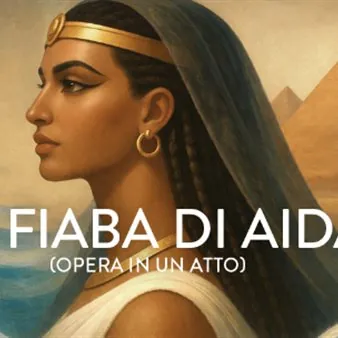

da mer 14 ott a ven 23 ott
Teatro Verdi - La fiaba di Aida
Opera in un atto (1 ora circa) LA FIABA DI AIDA Musica di Giuseppe Verdi Nuova orchestrazione a cura di PAOLO FACINCANI Da un’idea di PAOLO VALERIO Drammaturgia FRANCO DAMASCELLI Konzertmeister STEFANO FURINI Regia GIACOMO SEGULIA Scene REBECCA QUINTAVALLE Costumi a cura di…
 Indicazioni
Indicazioni
- Costi e prenotazioni
- Costo non indicato · Prenotazione non indicata
- Programma
- Programma da verificare. Apri la fonte ufficiale per orari e possibili aggiornamenti.
- In caso di maltempo
- Nessuna indicazione specifica pubblicata.
- Note
- Acquisito automaticamente dalla fonte.
L’EVENTO
Descrizione completa
Opera in un atto (1 ora circa)
LA FIABA DI AIDA
Musica di Giuseppe Verdi
Nuova orchestrazione a cura di PAOLO FACINCANI
Da un’idea di PAOLO VALERIO
Drammaturgia FRANCO DAMASCELLI
Konzertmeister STEFANO FURINI
Regia GIACOMO SEGULIA
Scene REBECCA QUINTAVALLE
Costumi a cura di GIACOMO SEGULIA
Nuovo allestimento della Fondazione Teatro Lirico Giuseppe Verdi di Trieste in coproduzione con Il Rossetti –Teatro Stabile del Friuli Venezia Giulia
Personaggi e interpreti
Aida IANA RATA
Radames ZHOU XUN
Amonasro JĘDRZEJ SUSKA
Amneris GIULIA DIOMEDE
Con ROBERTO PETRUZZELLI e “I PICCOLI DI PODRECCA”
Maestro marionettista MARINO IERMAN
Marionettisti LORENZO FRATTOLIN, CLARA GALANTI, BIANCA MARTINELLI, MICHELE POLO, MATTIA VODOPIVEC
Mercoledì 14 ottobre 2026 ore 11.00, Giovedì 15 ottobre 2026 ore 11.00, Venerdì 16 ottobre 2026 ore 11.00 e ore 18.00, Sabato 17 ottobre 2026 ore 11.00, Domenica 18 ottobre 2026 ore 18.00, Martedì 20 ottobre 2026 ore 11.00, Mercoledì 21 ottobre 2026 ore 11.00 e ore 17.30, Giovedì 22 ottobre 2026 ore 11.00, Venerdì 23 ottobre 2026 ore 11.00
Prevendita biglietti presso la biglietteria del Teatro Verdi
Da martedì a sabato dalle 9:00 alle16:00
Domenica dalle 10:00 alle 13:00 (e da un’ora prima dell’inizio dello spettacolo)
Lunedì e festivi chiuso.
IL PROGRAMMA
Programma e orari
Appuntamenti raccolti dalle fonti elencate. Dove manca un orario, non è ancora disponibile in questa scheda.
Programma pubblicato
- Dal 2026-10-14 al 2026-10-23
INFORMAZIONI UTILI
Prima di partire
- Controllare la fonte prima di partire.
ORGANIZZAZIONE